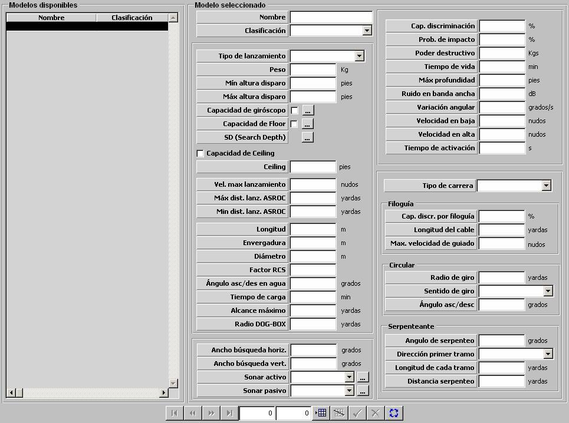
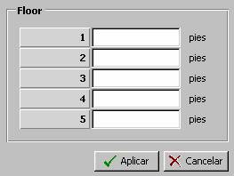
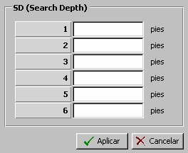

Torpedo

Descripción de los parámetros:
Tipo de Lanzamiento: Puede tomar los siguientes valores:
- AEREO
- ASROC
- SUBROC
- SUPERFICIE
- SUBMARINO
Este parámetro determina el comportamiento del torpedo en la fase de lanzamiento como sigue:
AEREO: Caída libre desde la aeronave lanzadora hasta la superficie. Una vez que entra en el agua, pasa a la siguiente fase.
ASROC y SUBROC: Tiro parabólico desde la unidad de superficie o submarina que lo lanza hasta el punto de entrada en el agua. Una vez que entra en el agua, pasa a la siguiente fase.
SUPERFICIE y SUBMARINO: Se considera que el torpedo entra en el agua directamente, y pasa a la siguiente fase.
Peso: Este parámetro es tenido en cuenta para el cálculo del peso transportado por las unidades aéreas que lo instalen.
Unidades: Kilogramos
Rango: 0 – 9999
Mínima Altura de Disparo: Este parámetro determina la mínima altura de la unidad aérea lanzadora a la que puede llevar a cabo un lanzamiento de este torpedo. Sólo podrá ser introducido si se ha seleccionado Tipo de Lanzamiento AÉREO.
Unidades: pies
Rango: 0 – 9999
Máxima Altura de Disparo: Este parámetro determina la máxima altura de la unidad aérea lanzadora a la que puede llevar a cabo un lanzamiento de este torpedo. Sólo podrá ser introducido si se ha seleccionado Tipo de Lanzamiento AÉREO.
Unidades: pies
Rango: 0 – 9999
Capacidad de Giróscopo: Este parámetro determina si el torpedo tiene capacidad de selección de ángulo de Giroscopio para el lanzamiento. Si se establece esta capacidad para el torpedo, se podrá abrir la ventana asociada para especificar los Datos de Giróscopo que se describe a continuación, pulsando en el botón que se encuentra junto al selector de esta capacidad. Sólo podrá ser seleccionado si se ha seleccionado Tipo de Carrera distinto de CIRCULAR.
Datos de Giróscopo: Estos parámetros caracterizan el Giróscopo del torpedo. Se especifican los ángulos de Giróscopo con los que puede ser lanzado el torpedo. Estos ángulos podrán ser seleccionados por el operador en el momento del lanzamiento.

Capacidad de Valores Discretos: Este parámetro determina si el torpedo tiene capacidad de valores discretos para los ángulos de Giróscopo. Si se selecciona, se podrán introducir hasta doce posibles valores de ángulo de Giróscopo, y si no se selecciona se deberá introducir un intervalo de ángulos (ángulo inicial y final de dicho intervalo). Si los valores son discretos, el operador podrá seleccionar para lanzamiento del torpedo uno de los ángulos discretos introducidos, y en caso contrario, podrá seleccionar cualquier ángulo dentro del intervalo especificado.
Ángulo (introducir signo), 1 a 12: Ángulos discretos de Giroscopio (hasta doce ángulos). Estos parámetros sólo podrán ser introducidos si se ha seleccionado Capacidad de Valores Discretos.
Unidades: grados
Rango: -180 – 180
Máxima apertura a babor: Ángulo máximo a babor (con respecto a la orientación del lanzador de torpedos) del intervalo de ángulos de Giróscopo. Estos parámetros sólo podrán ser introducidos si NO se ha seleccionado Capacidad de Valores Discretos.
Unidades: grados
Rango: 0 – 360
Máxima apertura a estribor: Ángulo máximo a estribor (con respecto a la orientación del lanzador de torpedos) del intervalo de ángulos de Giróscopo. Estos parámetros sólo podrán ser introducidos si NO se ha seleccionado Capacidad de Valores Discretos.
Unidades: grados
Rango: 0 – 360
Capacidad de Floor: Este parámetro determina si el torpedo tiene capacidad de selección de niveles límite de máxima profundidad para el lanzamiento. Si se establece esta capacidad para el torpedo, se podrá abrir la ventana asociada para especificar los Datos de Floor que se describe a continuación, pulsando en el botón que se encuentra junto al selector de esta capacidad.
Datos de Floor: Estos parámetros especifican los posibles niveles de Floor con los que puede ser lanzado el torpedo. Estos niveles podrán ser seleccionados por el operador en el momento del lanzamiento. El nivel seleccionado es tenido en cuenta por el modelo de torpedo lanzado cuando se encuentra en el agua como un límite de máxima profundidad.

Floor, 1 a 5: Niveles de Floor (hasta cinco profundidades).
Unidades: pies
Rango: 0 – 9999
SD (Search Depth): Siempre se podrá abrir la ventana asociada para especificar los datos de profundidad de búsqueda del torpedo que se describe a continuación, pulsando en el botón que se encuentra junto a esta etiqueta.
Datos de SD: Estos parámetros especifican los posibles niveles de SD con los que puede ser lanzado el torpedo. Estos niveles podrán ser seleccionados por el operador en el momento del lanzamiento. El nivel seleccionado es tenido en cuenta por el modelo de torpedo lanzado como profundidad a la que inicia la fase de búsqueda.

SD, 1 a 6: Niveles de SD (hasta seis profundidades).
Unidades: pies
Rango: 0 – 9999
Capacidad de Ceiling: Este parámetro determina si el torpedo tiene capacidad de selección de protección “por techo” para el lanzamiento.
Ceiling: Este parámetro determina el nivel de profundidad al que se activa la protección “por techo” del torpedo, cuando se lanza con esta protección activada. Es tenido en cuenta por el modelo de torpedo lanzado cuando se encuentra en el agua, de tal forma que nunca navega por encima de este nivel de profundidad en cualquiera de sus fases.
Unidades: pies
Rango: 0 – 9999
Velocidad Máxima de Lanzamiento: Este parámetro determina la máxima velocidad de la unidad a la que puede efectuar un lanzamiento de este torpedo.
Unidades: nudos
Rango: 0 – 9999
Máxima Distancia de Lanzamiento ASROC: Este parámetro determina la máxima distancia a la que se puede lanzar un torpedo con tipo de lanzamiento ASROC o SUBROC. Sólo podrá ser introducido si se ha seleccionado Tipo de Lanzamiento ASROC o SUBROC.
Unidades: yardas
Rango: 0 – 99999
Mínima Distancia de Lanzamiento ASROC: Este parámetro determina la mínima distancia a la que se puede lanzar un torpedo con tipo de lanzamiento ASROC o SUBROC. Sólo podrá ser introducido si se ha seleccionado Tipo de Lanzamiento ASROC o SUBROC.
Unidades: yardas
Rango: 0 – 99999
Longitud: Este parámetro es tenido en cuenta por los modelos de sensores optrónicos y radar para calcular la distancia a la que el torpedo es detectado. Sólo podrá ser introducido si se ha seleccionado Tipo de Lanzamiento ASROC o SUBROC.
Unidades: metros
Rango: 0,1 – 99,9
Envergadura: Este parámetro es tenido en cuenta por los modelos de sensores optrónicos y radar para calcular la distancia a la que el torpedo es detectado. Sólo podrá ser introducido si se ha seleccionado Tipo de Lanzamiento ASROC o SUBROC.
Unidades: metros
Rango: 0,1 – 99,9
Diámetro: Este parámetro es tenido en cuenta por los modelos de sensores optrónicos y radar para calcular la distancia a la que el torpedo es detectado. Sólo podrá ser introducido si se ha seleccionado Tipo de Lanzamiento ASROC o SUBROC.
Unidades: metros
Rango: 0,1 – 99,9
Factor RCS: Factor que modela la variación de RCS con el "Aspecto" (dado por el ángulo alfa = rumbo del contacto - marcación del contacto) del torpedo. Sólo podrá ser introducido si se ha seleccionado Tipo de Lanzamiento ASROC o SUBROC.
Unidades: Tanto por uno
Rango: 0,0 – 1,0
Ejemplo:
Si Factor RCS = 0 ⇒ RCS = RCS · seno (alfa).
Si Factor RCS = 0,25 ⇒ RCS = RCS ( 0,25 + 0,75 · seno (alfa) ).
Si Factor RCS = 1 ⇒ RCS no cambia con Aspecto.
Ángulo de Ascenso / Descenso en Agua: Este parámetro determina el ángulo de descenso dentro del agua del torpedo en la fase de crucero, hasta adquirir la profundidad de búsqueda.
Unidades: grados
Rango: 0 – 90
Tiempo de Carga: Este parámetro determina el tiempo necesario para cargar o descargar este torpedo, es decir, el tiempo que transcurre desde que el operador solicita carga o descarga de un torpedo de este tipo, hasta que se completa la operación y el torpedo queda listo para su lanzamiento en el tubo (si se solicitó carga) o el tubo queda vacío (si se solicitó descarga).
Unidades: minutos
Rango: 0 – 999
Alcance Máximo: Este parámetro determina la máxima distancia a la que se puede lanzar este torpedo. Cuando el operador solicita un lanzamiento de este torpedo contra un blanco, se comprueba que la distancia de la unidad propia al blanco es inferior a este alcance máximo.
Unidades: yardas
Rango: 0 – 99999
Radio DOG-BOX: Este parámetro determina el radio de la DOG-BOX, o zona en la que el torpedo lanzado puede recibir interferencias durante la fase de búsqueda. Es tenido en cuenta durante esta fase del torpedo de tal forma que fuentes de ruido dentro de esta zona y fuera del cono de búsqueda del torpedo pueden interferir al sonar asociado al torpedo, de forma que no obtenga ningún contacto.
Unidades: yardas
Rango: 0 – 9999
Ancho de Búsqueda Horizontal: Este parámetro determina el ancho horizontal del cono de búsqueda del torpedo. Es tenido en cuenta en la fase de búsqueda del torpedo de tal forma que descarta todos los contactos obtenidos por el sonar asociado que no estén dentro de este cono, teniendo en cuenta el ángulo, en horizontal y vertical, que forma la detección con el torpedo.
Unidades: grados
Rango: 0 – 180
Ancho de Búsqueda Vertical: Este parámetro determina el ancho vertical del cono de búsqueda del torpedo. Es tenido en cuenta en la fase de búsqueda del torpedo de tal forma que descarta todos los contactos obtenidos por el sonar asociado que no estén dentro de este cono, teniendo en cuenta el ángulo, en horizontal y vertical, que forma la detección con el torpedo.
Unidades: grados
Rango: 0 – 180
Sonar Activo: Este parámetro determina el sensor Sonar Activo asociado al torpedo. Es tenido en cuenta por el torpedo para la búsqueda de blancos. Ver apartado Sonar Activo.
Sonar Pasivo: Este parámetro determina el sensor Sonar Pasivo asociado al torpedo. Es tenido en cuenta por el torpedo para la búsqueda de blancos. Ver apartado Sonar Pasivo.
Caacidad de Discrimpinación: Este parámetro determina la probabilidad de que el torpedo sea engañado por un productor de ruido. Es tenido en cuenta para decidir si el torpedo es capaz de discernir entre el blanco correcto y el productor de ruido cuando se producen las condiciones de posible engaño.
Unidades: %
Rango: 0 – 100
Ejemplo:
Una vez que se producen las condiciones de posible engaño:
Si Cap. de Discriminación = 0 ⇒ Siempre es engañado.
Si Cap. de Discriminación = 50 ⇒ Es engañado aleatoriamente (@50% veces).
Si Cap. de Discriminación = 100 ⇒ No es engañado nunca.
Probabilidad de Impacto: Este parámetro es tenido en cuenta para decidir si una vez que se producen las condiciones de impacto, el torpedo efectivamente produce impacto o no.
Unidades: %
Rango: 0 – 100
Ejemplo:
Una vez que se producen las condiciones de impacto:
Si Prob. de Impacto = 100 ⇒ Impacta siempre.
Si Prob. de Impacto = 50 ⇒ Impacta aleatoriamente (@50% veces).
Si Prob. de Impacto = 0 ⇒ No impacta nunca.
Poder Destructivo: Este parámetro determina cuánto de destructivo es un impacto contra una unidad de este torpedo, lo cual se especifica mediante la carga explosiva del torpedo. Es tenido en cuenta para la evaluación de los daños producidos por el impacto de este torpedo en una unidad.
Unidades: kilogramos
Rango: 0 – 999
Tiempo de Vida: Este parámetro determina el máximo tiempo en total (pasando por las distintas fases) que permanece el torpedo en el agua desde su lanzamiento, cuando no llega a impactar con ningún blanco. Transcurrido este tiempo, se considera que el torpedo se destruye sin detonar.
Unidades: minutos
Rango: 0 – 999
Máxima Profundidad: Este parámetro determina la máxima profundidad a la que puede navegar el torpedo. Es tenido en cuenta por el modelo de torpedo lanzado cuando se encuentra en el agua como un límite de máxima profundidad independientemente del nivel del Floor seleccionado.
Unidades: pies
Rango: 0 – 99999
Ruido en Banda Ancha: Este parámetro determina el nivel de ruido propio en banda ancha del torpedo recibido por un sonar pasivo o activo propio. Es tenido en cuenta para modelar cómo afecta el ruido del torpedo a la recepción de los sonares propios.
Unidades: dB
Rango: 0 – 99999
Régimen de Variación Angular: Este parámetro determina la velocidad de giro horizontal o vertical del torpedo en el agua en cualquiera de sus fases de navegación.
Unidades: grados / segundo
Rango: 0 – 999,9
Velocb idad del Torpedo en Baja: Este parámetro determina la velocidad a la que navega el torpedo en el agua en las fases de lanzamiento, crucero y búsqueda.
Unidades: nudos
Rango: 0 – 999,9
Velocidad del Torpedo en Alta: Este parámetro determina la velocidad a la que navega el torpedo en el agua en la fase de seguimiento.
Unidades: nudos
Rango: 0 – 999,9
Tiempo de Activación: Esta parámetro determina el tiempo de protección tras el lanzamiento. Es el que transcurre desde que el torpedo lanzado entra en el agua hasta que activa sus sensores para iniciar la fase de búsqueda.
Unidades: segundos
Rango: 0 – 999
Tipo de Carrera: Puede tomar los siguientes valores:
- RECTILÍNEA
- FILOGUIADO
- CIRCULAR
- SERPENTEO
- COMBINADO
- SEGUIDOR DE ESTELA
- HATS
- HELICOIDAL
Este parámetro determina el comportamiento del torpedo lanzado en las fases de crucero y búsqueda. A continuación se describen brevemente cada uno de los tipos de carrera:
RECTILÍNEA: El torpedo navega de forma rectilínea durante la fase búsqueda. Cuando adquiere blanco, pasa a la fase de seguimiento, y si pierde un blanco adquirido, entra en modo circular.
FILOGUIADO: Desde que el torpedo entra en el agua pasa a fase de seguimiento con rumbo de interceptación al blanco asignado. Si la filoguía se interrumpe, entra en modo circular.
CIRCULAR: Desde que entra en el agua, pasa a fase de búsqueda, describiendo trayectoria circular hasta que adquiere blanco, que pasa a la fase de seguimiento. Si pierde el blanco adquirido, vuelve a entrar en modo circular.
SERPENTEO: Desde que entra en el agua, pasa a fase de búsqueda, describiendo trayectoria serpenteo hasta que adquiere blanco, que pasa a la fase de seguimiento. Si pierde el blanco adquirido, entra en modo circular / helicoidal. Si recorre la distancia de serpenteo sin adquirir blanco, también entra en modo circular / helicoidal.
COMBINADO: Igual que SERPENTEO, pero en el momento de lanzamiento el operador puede anular el serpenteo, y lanzarlo con carrera circular.
SEGUIDOR DE ESTELA: Desde que entra en el agua, navega en forma rectilínea hasta cortar una estela, y una vez que la corta, describe un serpenteo amortiguado en la dirección de avance de la estela. Si pierde la estela, entra en modo circular.
HATS: Igual que COMBINADO con la diferencia de que este torpedo es de Tipo de Lanzamiento AÉREO.
HELICOIDAL: Desde que entra en el agua, pasa a fase de búsqueda, describiendo trayectoria helicoidal hasta que adquiere blanco, que pasa a la fase de seguimiento. Si pierde el blanco adquirido, vuelve a entrar en modo helicoidal.
Filoguiado:
Capacidad de Discriminación por Filoguía: Este parámetro determina la probabilidad de que el torpedo sea engañado por un productor de ruido cuando el torpedo es guiado mediante filoguía. Sólo puede ser introducido si se ha seleccionado Tipo de Carrera FILOGUIADO.
Unidades: %
Rango: 0 – 100
Ejemplo:
Igual que Capacidad de Discriminación.
Longitud del Cable: Este parámetro determina la longitud del cable del torpedo Filoguiado. Es tenido en cuenta por el modelo de torpedo lanzado de tal forma que si el torpedo se aleja de la unidad lanzadora a una distancia superior a esta longitud, se considera que se rompe el cable y se interrumpe la filoguía. Sólo puede ser introducido si se ha seleccionado Tipo de Carrera FILOGUIADO.
Unidades: yardas
Rango: 0 – 99999
Máxima Velocidad de Guiado: Este parámetro determina la máxima velocidad a la que puede navegar la unidad lanzadora para poder hacer filoguía del torpedo. Es tenido en cuenta por el modelo de torpedo lanzado de tal forma que si la unidad lanzadora supera esta velocidad, se considera que se rompe el cable y se interrumpe la filoguía. Sólo puede ser introducido si se ha seleccionado Tipo de Carrera FILOGUIADO.
Unidades: nudos
Rango: 0 – 99
Circular:
- HORARIO
- ANTIHORARIO
Radio de Giro: Este parámetro determina el radio de giro con el que el torpedo navega cuando entra en modo circular. Sólo puede ser introducido si NO se ha seleccionado Tipo de Carrera SEGUIDOR DE ESTELA.
Unidades: yardas
Rango: 0 – 9999
Sentido de Giro: Puede tomar los siguientes valores:
Este parámetro determina el sentido de giro con el que el torpedo navega cuando entra en modo circular. Sólo puede ser introducido si NO se ha seleccionado Tipo de Carrera SEGUIDOR DE ESTELA.
Ángulo de Ascenso / Descenso: Este parámetro determina el ángulo vertical con el que el torpedo asciende y desciende en su navegación cuando entra en modo circular. Cuando este ángulo es distinto de cero, este modo se denomina helicoidal. Sólo puede ser introducido si se ha seleccionado Tipo de Carrera SERPENTEO, COMBINADO o HATS.
Unidades: grados
Rango: 0 – 180
Serpenteo:
- DERECHA a IZQUIERDA
- IZQUIERDA A DERECHA
Ángulo de Serpenteo: Este parámetro determina el ángulo horizontal con el que el torpedo realiza el serpenteo, tal como se muestra en la figura. Sólo puede ser introducido si se ha seleccionado Tipo de Carrera SERPENTEO, COMBINADO, SEGUIDOR DE ESTELA o HATS.
Unidades: grados
Rango: 0 – 360
Dirección del Primer Tramo: Puede tomar los siguientes valores:
Este parámetro determina el la dirección del primer giro con el que el torpedo inicia el serpenteo, tal como se muestra en la figura. Sólo puede ser introducido si se ha seleccionado Tipo de Carrera SERPENTEO, COMBINADO, SEGUIDOR DE ESTELA o HATS.
Longitud de Cada Tramo: Este parámetro determina la longitud de cada tramo con el que el torpedo realiza el serpenteo, tal como se muestra en la figura. Sólo puede ser introducido si se ha seleccionado Tipo de Carrera SERPENTEO, COMBINADO, SEGUIDOR DE ESTELA o HATS.
Unidades: yardas
Rango: 0 – 9999
Distancia de Serpenteo: Este parámetro determina la distancia máxima que puede recorrer el torpedo en modo serpenteo. Sólo puede ser introducido si se ha seleccionado Tipo de Carrera SERPENTEO, COMBINADO, SEGUIDOR DE ESTELA o HATS.
Unidades: yardas
Rango: 0 – 99999